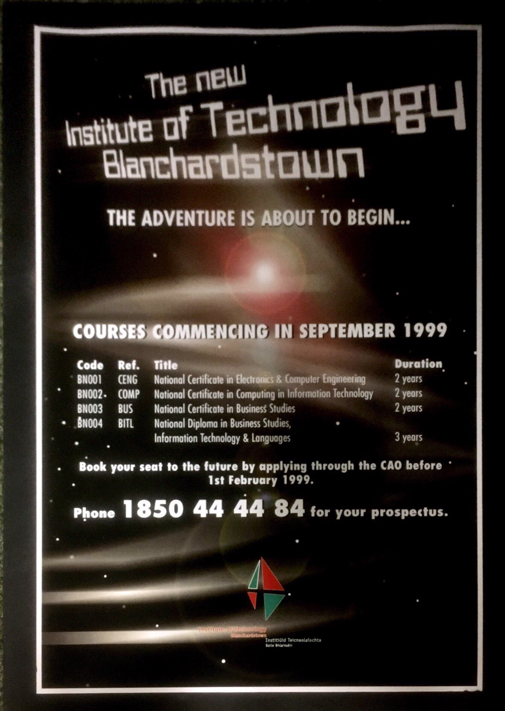
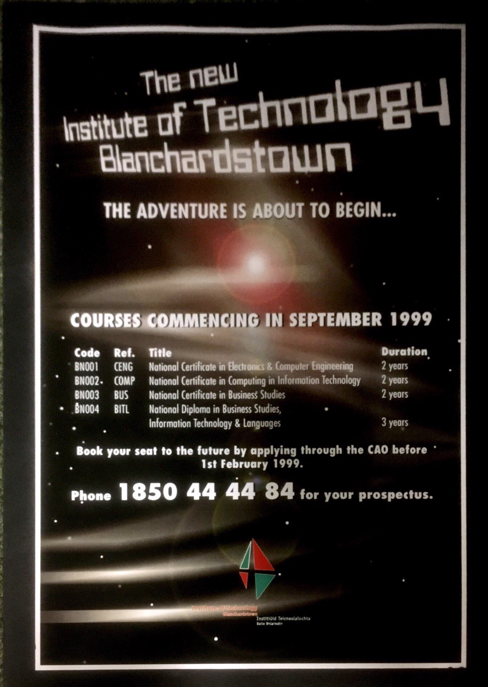
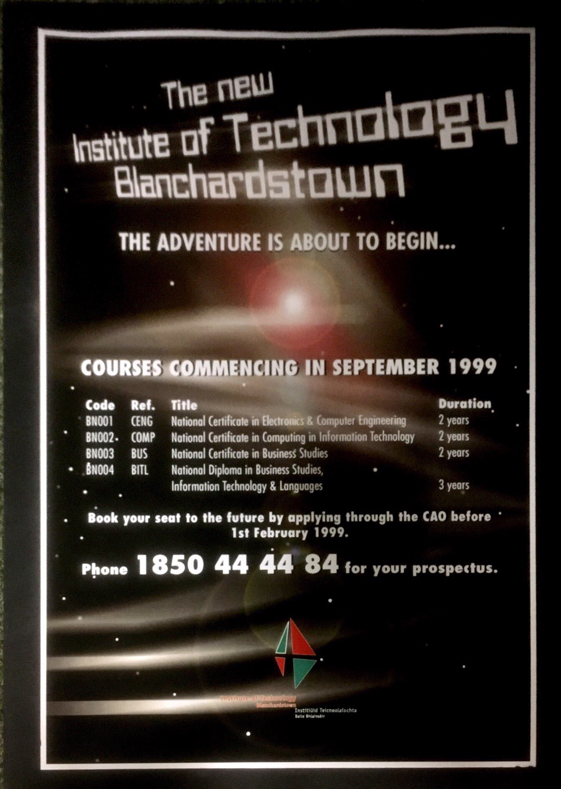

1999.

 

1999.

1999 beginning. Cement on floor wasn’t even dry, people had to walk round the buildings. courses were very different too. In the slideshow you can see what ITB offered. Electronics, computing, business etc.
div class="w3-content w3-section" style="max-width:500px">1999.


Big competitons in Navan etc, fought hard to have an institute of technology in Blanch. 2004 big building project was done, what is the future of the institute. Needed a much more obvious and dedicated unit set up marketing unit In ITB. -New school of thought, mc Connells, old school ad agencies, more traditional way of marketing web wasn’t advanced much.- 2009, the CDM launced- set up bebo page, idea was to say if you applied to course please join the bebo page, chance to interact with lectures and students.